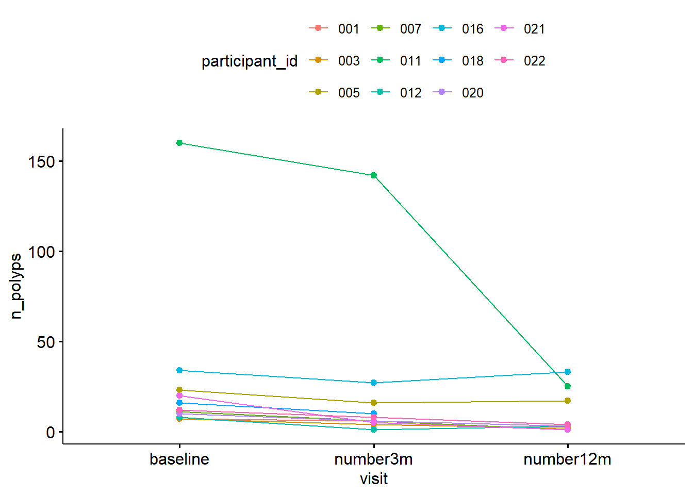
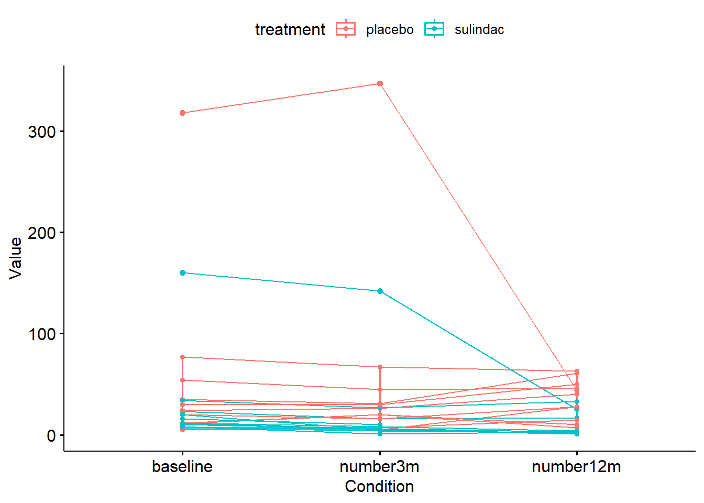
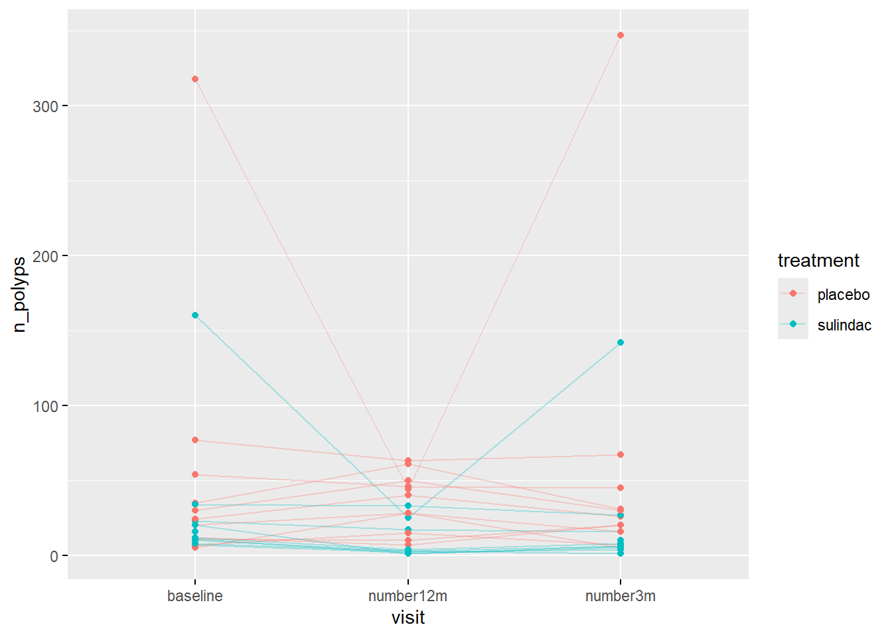
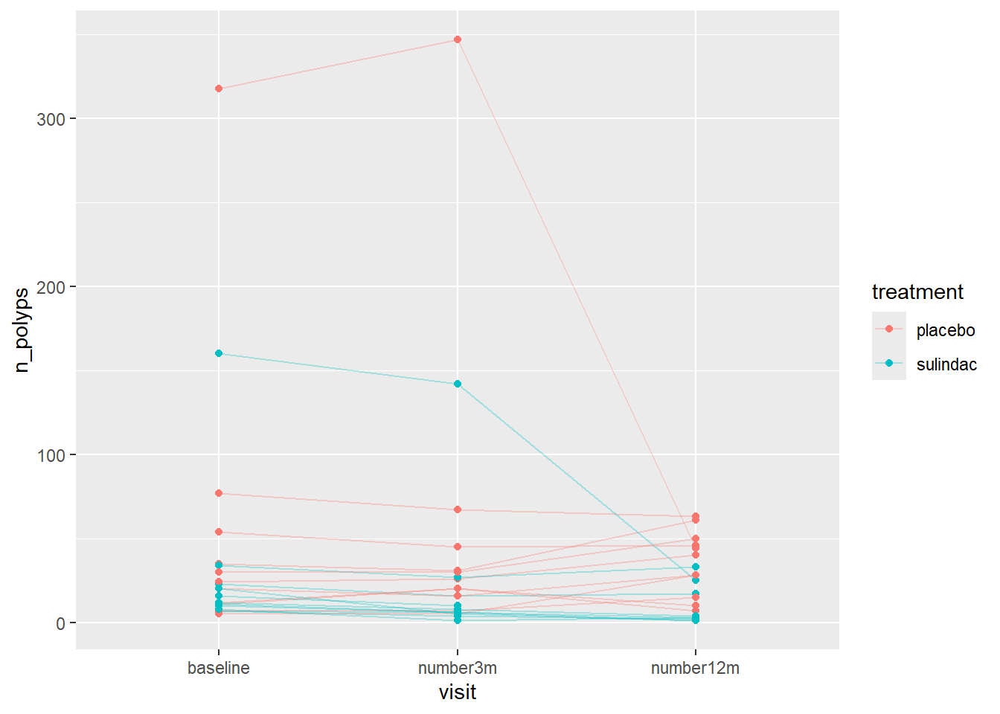
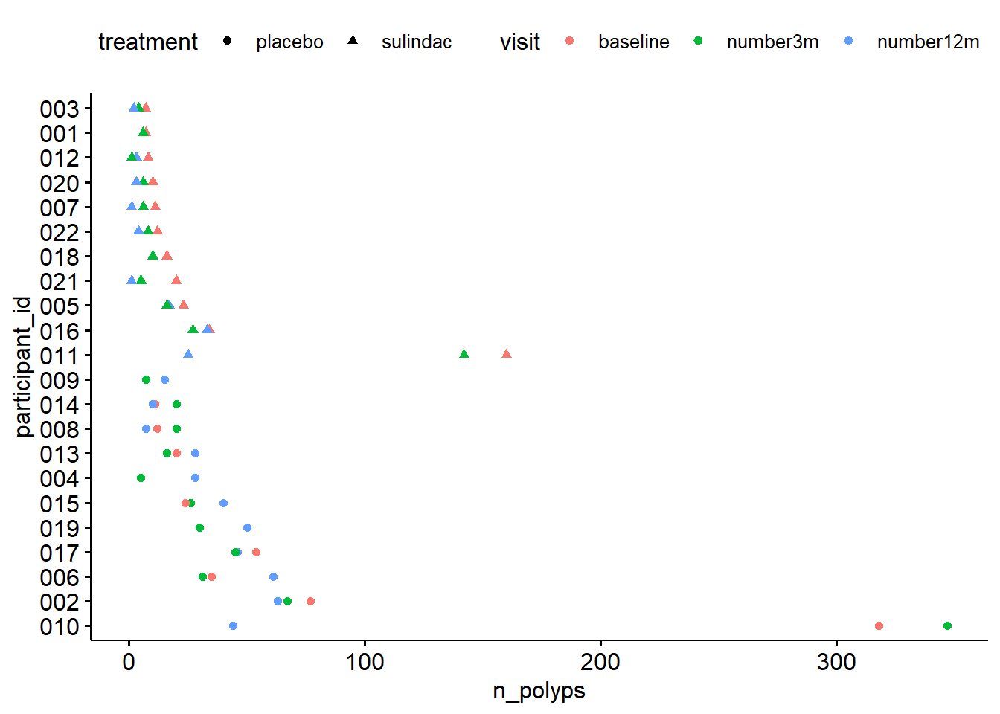

Sessió 4 Comunicació de resultats i visualització avançada
4.2 Representació de dades aparellades o longitudinals
Les dades aparellades o longitudinals són dissenys experimentals freqüents en medicina ja que permeten fer un seguiment del pacient i veure la seva evolució. La visualització i tractament d’aquestes dades però es mareix una atenció especial, ja que és molt important tenir clar que no es tracta de mesures totalment independents entre elles, sinó que provenen d’un mateix individu.
La visualització d’aquesta tipologia de dades és mitjançant un gràfic de línies. Per exemplificar-ho utilitzarem el conjunt de dades polyps de medicaldata.
Primer carreguem el paquet
Després posem a punt el data frame per tenir una única columna amb el nombre de pòlips registrats a cada visita:
polyps_long <- pivot_longer(polyps,
cols = c(baseline, number3m, number12m),
names_to = "visit",
values_to = "n_polyps")
head(polyps_long)## # A tibble: 6 × 6
## participant_id sex age treatment visit n_polyps
## <chr> <fct> <dbl> <fct> <chr> <dbl>
## 1 001 female 17 sulindac baseline 7
## 2 001 female 17 sulindac number3m 6
## 3 001 female 17 sulindac number12m NA
## 4 002 female 20 placebo baseline 77
## 5 002 female 20 placebo number3m 67
## 6 002 female 20 placebo number12m 63Seleccionem aquelles mostres que se’ls va administrar el tractament:
Visualitzem el nombre de pòlips al llarg del temps en cada individu:
## Warning: Removed 2 rows containing non-finite outside the scale
## range (`stat_boxplot()`).## Warning: Removed 2 rows containing missing values or values
## outside the scale range (`geom_line()`).## Warning: Removed 2 rows containing missing values or values
## outside the scale range (`geom_point()`).
ggline(data = polyps_long_tr, x = "visit", y = "n_polyps",
id = "participant_id", color = "participant_id")## Warning: Removed 2 rows containing missing values or values
## outside the scale range (`geom_line()`).
## Removed 2 rows containing missing values or values
## outside the scale range (`geom_point()`).
Amb aquest gràfic observem la tendència de cada individu, però com podem saber si el tractament ha tingut efecte?
Per veure si el nombre de pòlips canvia al llarg del temps de mateixa manera en individus tractats dels no tractats, podem colorejar les observacions segons el tractament:
ggpaired(
polyps_long,
x = "visit",
y = "n_polyps",
id = "participant_id",
color = "treatment",
line.color = "treatment",
width = 0
)## Warning: Removed 2 rows containing non-finite outside the scale
## range (`stat_boxplot()`).## Warning: Removed 2 rows containing missing values or values
## outside the scale range (`geom_line()`).## Warning: Removed 2 rows containing missing values or values
## outside the scale range (`geom_point()`).
Les funcions de gràfics del paquet ggpubr són molt útils, però a vegades limitades. Una alternativa que permet visualitzar dades longitudianls és a partir del paquet ggplot2.
Primer cal instal·lar i carregar el paquet:
## Warning: package 'ggplot2' is in use and will not be installedp <- ggplot(
polyps_long,
aes(visit, n_polyps,
group = participant_id,
color = treatment)
) +
geom_line(alpha = 0.3) +
geom_point()
ggpar(p)## Warning: Removed 2 rows containing missing values or values
## outside the scale range (`geom_point()`).
Compara els dos gràfics…veus alguna cosa diferent?El factor visit no té l’odre que ens agradaria, recordes com es pot canviar l’ordre dels nivells d’un factor?
Ara torna a exacutar el gràfic i veuràs que apareixen les visites ordenades:
p2 <- ggplot(polyps_long,
aes(visit, n_polyps,
group = participant_id,
color = treatment)
) +
geom_line(alpha = 0.3) +
geom_point()
p2## Warning: Removed 2 rows containing missing values or values
## outside the scale range (`geom_line()`).## Warning: Removed 2 rows containing missing values or values
## outside the scale range (`geom_point()`).
4.3 Altres representacions
A vegades però, ens farà falta ser creatius i crear gràfics que surten una mica d’aquest marc que acabem d’explicar. És per això que us animo a explorar alternatives per representar algunes dades.
ggdotchart(data = polyps_long, x = "participant_id", y = "n_polyps",
color = "visit",
shape = "treatment",
group = "treatment",
rotate = T)